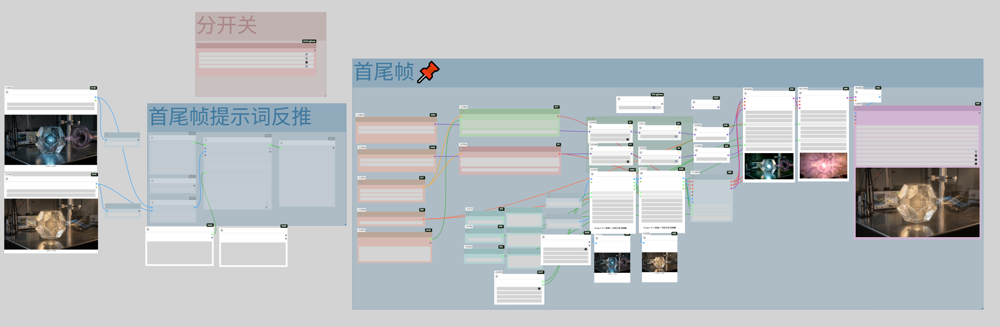

核心模块：万相首尾帧工作流 (Wan-Keyframe Workflow)

核心逻辑：该工作流通过万相模型的 I2V 接口，同时注入起始帧与结束帧的潜空间特征。配合 Flow-Matching 算法，系统能自动计算中间动作的运动轨迹，确保视频生成的首尾连贯性。
28岁 | 广州 | 计算机技术硕士 | WanVideo (万相) 专项工作流

核心逻辑：该工作流通过万相模型的 I2V 接口，同时注入起始帧与结束帧的潜空间特征。配合 Flow-Matching 算法，系统能自动计算中间动作的运动轨迹，确保视频生成的首尾连贯性。